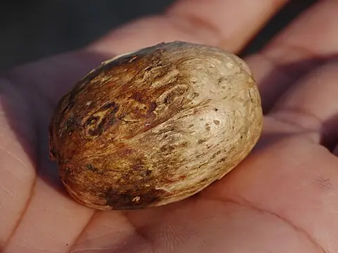

Hog plum
Hog plum is a wild fruit you can forage from August to November in South India, East, Northeast, West coast and Deccan and Central forests. Tall forest tree with clusters of sour, fibrous green-to-yellow fruit.

When is hog plum in season in India?
Hog plum is usually in season August to November. Timing shifts with weather, latitude and altitude.
Where does hog plum grow in India?
Hog plum grows in Andaman and Nicobar Islands, Andhra Pradesh, Arunachal Pradesh, Assam, Bihar, Chhattisgarh, Dadra and Nagar Haveli and Daman and Diu, Goa, Gujarat, Jharkhand, Karnataka, Kerala, Lakshadweep, Madhya Pradesh, Maharashtra, Manipur, Meghalaya, Mizoram, Nagaland, Odisha, Puducherry, Sikkim, Tamil Nadu, Telangana, Tripura, West Bengal. Regions: South India, East, Northeast, West coast and Deccan, Central forests.
How do you recognise hog plum?
Tall forest tree with clusters of sour, fibrous green-to-yellow fruit.
How do you harvest hog plum?
Pick fruit that comes away easily, or gather freshly fallen fruit. Don't break branches, and leave plenty for birds and animals.
How do you eat hog plum?
Ambade uppkari, amra chutney, pickles.
How do you store hog plum?
Pickle in brine or oil.
What is hog plum good for?
Vitamin C.
What can you cook with hog plum?
- Ambade cooler: Boil ripe hog plums, mash, strain, and add jaggery, salt and a little chilli.
- Ambade uppkari: Hog plums cooked with jaggery, chilli and mustard. A sweet-sour Konkani side.